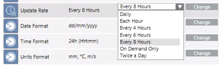

Changing the Location Forecasts Rate
You can change how often weather forecasts will be updated for a new location or for an existing location.
- In System Browser, select Project > Field Networks > [SORIS network] > [Meteoblue adapter] > Locations > [location].
NOTE: You must skip this step if you are configuring a new location and you selected the New Location object in System Browser. - In the Operation tab, next to the Update Rate property select another rate from the drop-down list, and click Change.
- To have an update of the weather forecast predictions once a day (00:00), select Daily.
- To have an update of the weather forecast predictions twice a day (00:00 and 12:00), select Twice a Day.
- To have an update of the weather forecast predictions per hours, select the wanted rate in hours among:
- Each Hour
- Every 4 Hours (00 - 04 - 08 - 12 - 16 - 20)
- Every 6 hours (00 - 06 - 12 - 18)
- Every 8 hours (00 - 08 - 16) 
- Select [Meteoblue adapter].
- In the Extended Operation tab, next to the URL property, click Discover.
- The adapter configuration is refreshed with the updated data.